ENTRY グローバルプロジェクトに応募する
グローバルプロジェクトに応募する
募集期間5月15日 〜 7月12日
英語力・成績は不問。完全オンラインで、全国どこからでも参加できます。
定員に達し次第締め切りとなりますのでお早めにお申し込みください。
※Googleフォームに移動します／ご相談は公式LINEからも受け付けています
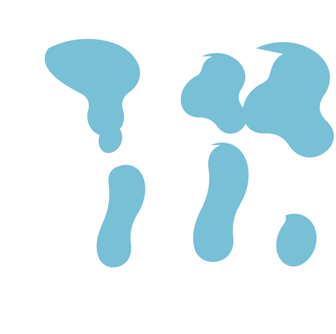
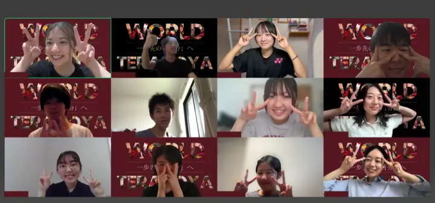
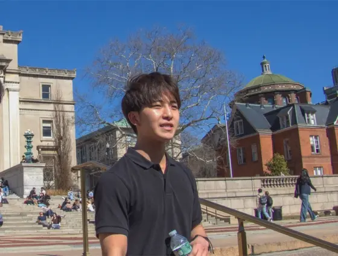
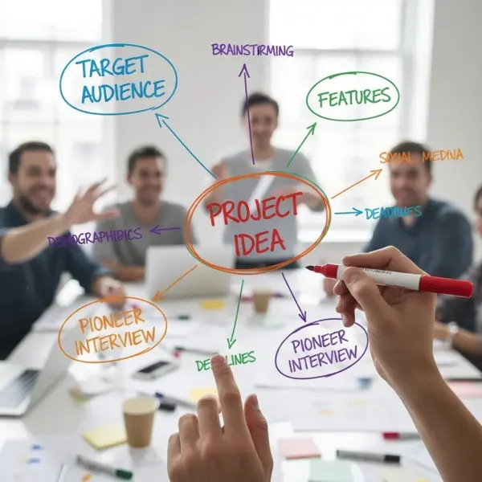
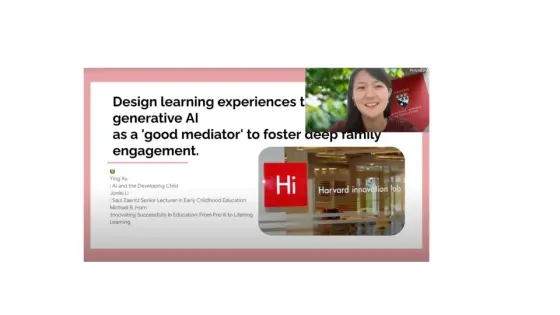
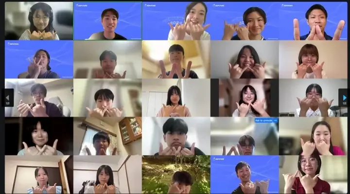
全国の高校生・大学生、募集中! 2026年7月12日 応募締切 7月〜10月にオンラインで開催 英語力・成績 不問!
グローバルプロジェクトとは、全国の高校生・大学生を対象にしたオンラインの研修プログラムです。参加者はそれぞれの「探究プロジェクト」に取り組み、海外経験や教育経験が豊富なスタッフのサポートを受けながら、自分だけのテーマを深めていきます。
さらにセッションパートでは、スタンフォード大学・ハーバード大学・MITなど、世界のトップ大学を卒業し、グローバルに活躍している社会人から直接話を聞くことができます。彼らのリアルな経験や考えに触れることで、プロジェクトの視野も広がります。
海外に行ったことがなくても、英語を流暢に話せなくても。必要なのは「やってみたい」という気持ちだけです。
本気で世界に挑戦する大人たちと出会い、心のエンジンをドライブさせよう。
そして、あなたも「世界に挑戦する一歩」を踏み出してみませんか？
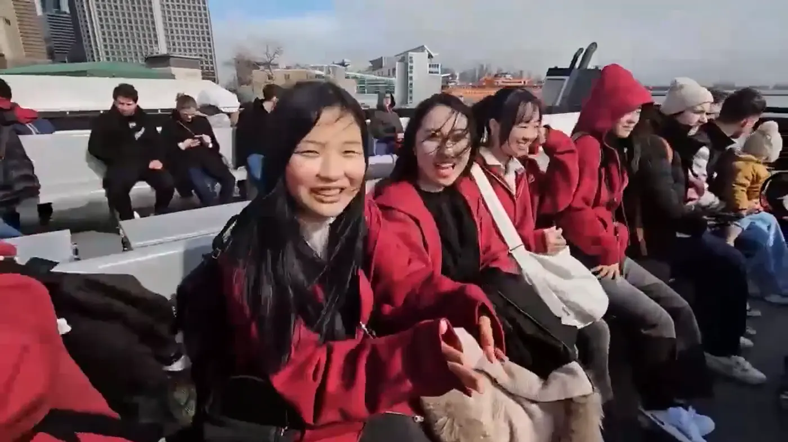
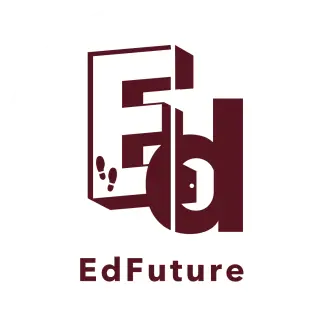
主催団体：
NPO法人EdFuture
96%
2025年度 参加者満足度
累計参加者数 76人／
全国どこからでもオンラインで参加
得られる経験視野が広がる
ハーバード・MIT・スタンフォードの現役学生から、リアルな経験を直接聞くことができます。教科書では出会えない生の言葉に触れることで、「やってみたい」という気持ちが、具体的な進路のイメージに変わっていきます。
得られる経験行動が変わる
スタンフォード大学発祥のデザイン思考を取り入れ、知識を詰め込むだけでなく、実際に行動し、失敗し、学ぶプログラムです。インタビュー、試作、検証まで、自分のテーマを最後までやり切ります。
得られる経験誰でも始められる
地方在住でも、海外経験がなくても大丈夫です。英語力や成績での選考基準は設けていません。全6回すべてオンラインで実施するため、自宅から全国の仲間とつながって探究を進められます。
スタンフォード・ハーバード・MIT。世界最高峰の大学で学ぶ現役学生をゲストに迎えた、本プログラムだけの特別セッションを各回に用意しています。
ボストン・ニューヨーク又はサンフランシスコへの短期海外留学に行けるチャンスがあります。プログラムでの学びを、実際の海外経験につなげられます。
スタンフォード大学発祥のデザイン思考を取り入れ、テーマ設定から検証まで、経験豊富なスタッフが一人ひとりの探究をサポートします。
プログラム修了者には修了証を付与します。オンライン開催のため、全国どこからでも参加でき、進路の実績としても残ります。
2027
渡航
グローバルプロジェクトの修了者は「ワールド寺子屋2027（短期海外研修）」の一次選考が免除されます。さらに、優秀者は参加権を獲得します。プログラムでの学び → 実際の海外経験という、明確なステップアップの道を用意しています。
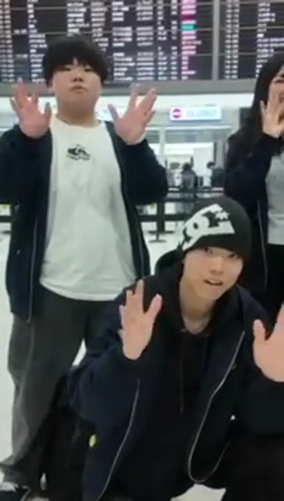
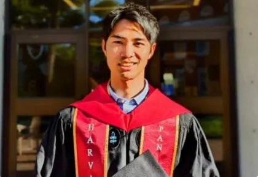
中村 柾Sho Nakamura
NPO法人EdFuture 代表理事／ハーバード大学・スタンフォード大学卒
19歳のとき初めてアメリカへ飛び出し、そこで見た景色と出会った人たちが、人生の方向を大きく変えました。挑戦に必要なのは、完璧な英語力や特別な才能ではありません。必要なのは、ただ「行ってみたい！」という気持ちだけ。皆さんが一歩踏み出すのを、EdFutureの情熱あるスタッフが全力で支えます。
第1回「興味関心深掘り」のオープニングセッションを担当します。
芝 雄太郎Yutaro Shiba
コロンビア大学 学部生
第2回「デザイン思考・課題発見リーチアウト」のセッションを担当します。自分が本当に向き合いたい問いをどう見つけるのか、そして見つけた問いをどう他者にひらいていくのか。ニューヨークでの学びと日々の実践をもとにお話しします。
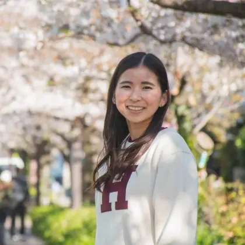
則本 菜奈子Nana Norimoto
ハーバード大学教育大学院生
第4回「プロトタイプ」のセッションを担当します。頭の中のアイデアを形にして、実際に誰かに使ってもらう。その往復の中でしか見えてこないものがあります。教育の現場と研究の両方から、試作の進め方をお伝えします。
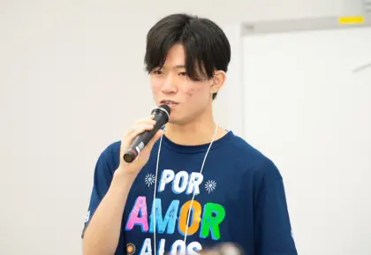
田中 優希Yuki Tanaka
MIT（マサチューセッツ工科大学）学部生
第5回「テスト」のチューニングセッションを担当します。作ったものを世に出して確かめる工程は、いちばん怖くて、いちばん学びが多い時間です。世界最先端の研究環境で日々向き合っていることを、みなさんの探究に引き寄せて話します。
Arata
探究テーマ：皆が特性を持ったありのままの自分を肯定できるには？
言語化できなかった“生涯かけて向き合いたい問い”を形にするため、このプログラムで一歩踏み出しました。NPO法人「wacca」さんにオンラインインタビューし、その後には「生きてるだけで金メダル！」と書かれたステッカーやバッジを作成して周りの人に配ったり、「今日の偉かった自分」をシェアするLINEグループを作成して効果検証しました。そのあとはワールド寺子屋プログラムに参加し、ボストンとニューヨークに留学しました。
一緒に参加したメンバーは、課外活動をたくさん経験してきた人もいれば、これが初めての課外活動という人もいました。そこに違いはあっても、皆「一歩踏み出す仲間」という点では何も違いがありません。自分と向き合い、「一歩踏み出したい」と思ったら、ぜひ参加してほしいです。
Chocho
探究テーマ：発展途上国の子どもたちが働きながら学べる環境づくり
将来は海外で働きたいという思いはあったものの、具体的なビジョンを描けずにいました。HPで知り「私もやってみたい！」と強く感じたことがきっかけです。アフリカで活動されている日本の方にインタビューをしたり、学校で文房具を回収して現地に届けたり、このプログラムで考えたアイディアをもとに「起業スタートダッシュ」プログラムにも参加しました。
多様な価値観を持つ仲間と本気で議論する中で、特に「自分だけの物差しを持つこと」の大切さを学びました。最初は自信がなかった自分も、発言や行動を重ねるうちに少しずつ成長を実感しています。決めるのは自分、頼るのはスタッフや仲間、Take it easy！
Zenji
探究テーマ：どんな人でも一歩を踏み出すには、何が必要？
初めて自分のテーマを決めて活動する中、何をしたいのか分からず悩みましたが、ハワイに留学した高校の英語の先生とのZoomをきっかけに方向性を見つけました。先生から、学生でないと応募できない奨学金が多く留学準備に苦労したという話を聞き、「なぜこんなに素晴らしい人でも支援されないのか」と疑問を抱き、似鳥国際奨学財団に直接メールを送って若者にできることを尋ねました。
これらの経験を通して、「まずは新しいことに挑戦してみる」ことが人生を変える一歩になると実感しました。やらない理由を探すより、迷ったらやってみる。その上で考えることで、自分のやりたいことがより明確になると感じています。
オンライン探究プログラム［グローバルプロジェクト］Global Project 2026
全国の高校1年〜大学4年生
・2026年5月時点で日本の高校・大学それに相当する教育機関に在学中であること
・心身ともに健康であること
・プログラム実施日程 全6回に参加できること
・オンラインでセッションに参加できる環境が整っていること（安定した通信環境／PCまたはタブレットからの参加必須）
高校生30名 ／ 大学生10名（先着順に選考します）
45,000円（税込）
※地方参加者応援枠・奨学金枠に選出された場合は全額無償となります
全6回（7月19日／8月9日／8月23日／9月13日／10月4日／10月25日 いずれも日曜 9:00-12:00・日本時間）
2026年5月15日 〜 7月12日
※日本時間／定員に達し次第締め切り
完全無料・オンライン開催
保護者・ご友人とのご参加も歓迎しています。日程が合わない場合はアーカイブをご覧いただけます。
下記フォームよりお申し込みください。まずは無料説明会への参加がおすすめです。
申込フォームへ※ご不明な点は事務局（info@edfuture2022.org）または公式LINEまでお気軽にご相談ください。
全6回・すべてオンラインで実施
1
7月19日（日）9:00-12:00
自分が何に心を動かされるのかを掘り下げ、探究テーマの種を見つけます。
GUEST中村 柾（ハーバード・スタンフォード卒／EdFuture代表）
2
8月9日（日）9:00-12:00
スタンフォード発祥のデザイン思考を学び、当事者へのリーチアウトを始めます。
GUEST芝 雄太郎（コロンビア大学 学部生）
3
8月23日（日）9:00-12:00
ここまでの探究を仲間と共有し、打ち手のアイデアを一気に広げます。
4
9月13日（日）9:00-12:00
アイデアを実際に形にし、人に見せられる状態まで持っていきます。
GUEST則本 菜奈子（ハーバード教育大学院生）
5
10月4日（日）9:00-12:00
試作したものを実際に試し、結果をもとに改善します。
GUEST田中 優希（MIT 学部生）
6
10月25日（日）9:00-12:00
半年間の探究の成果を、全国の仲間とゲストの前で発表します。
EXPO DAY
修了者には修了証を付与
修了者は「ワールド寺子屋2027（短期海外研修）」の一次選考が免除されます。さらに優秀な成果を残した方は参加権を獲得し、サンフランシスコまたはボストン・ニューヨークでの短期海外研修に進むことができます。
EdFutureは、すべての人が安心して挑戦できる環境を目指しています。地方在住の方、経済的に不安がある方のために地方参加者応援枠・奨学金枠を用意しています。本奨学金は給付型（返済不要）であり、受給が決定した場合はプログラム費用が全額免除になります。
首都圏（東京・神奈川・埼玉・千葉・大阪）を除く地域に在学の応募者が対象です。
準生活保護世帯（住民税非課税世帯など）、またはそれに準ずる経済状況にあるご家庭が対象です。家計の急変（災害・失業など）も個別にご相談いただけます。
二つの枠を合わせて約10名程度。給付型（返済不要）で、受給決定時は参加費用が全額免除になります。
※制度適用の可否は、提出いただく簡易な証明書類（例：非課税証明書、就学援助の受給証明、その他支援制度の対象証明等）をもとに個別に判断させていただきます。状況に応じて追加の確認をお願いする場合があります。奨学金制度には人数の上限があります。
ご相談・お問い合わせは事務局（info@edfuture2022.org）までご連絡ください。
6月18日（木）20:00-21:00
プログラムの内容、1日の流れ、これまでの参加者の変化についてお話しします。保護者・ご友人との参加も歓迎です。日程が合わない方にはアーカイブをお送りしますので、少しでも気になったらまずは説明会へお越しください。
説明会に申し込む
グローバルプロジェクトに応募する
募集期間5月15日 〜 7月12日
英語力・成績は不問。完全オンラインで、全国どこからでも参加できます。
定員に達し次第締め切りとなりますのでお早めにお申し込みください。
※Googleフォームに移動します／ご相談は公式LINEからも受け付けています
はい、成績や英語力での基準は設けておりませんのでご参加いただけます。挑戦の気持ちを尊重しております。
はい、可能です。説明会および全6回のプログラムはすべてオンラインでの開催ですので、ご自宅からご参加いただけます。
プログラムにはご参加いただけませんが、内容や雰囲気などを知るために説明会にご参加いただくことは可能です。
全6回のプログラムは、ご自身の探究を進めていただくためにも参加必須とさせていただいております。特段の事情がある場合は説明会、または公式LINEなどでご相談ください。
プログラム修了者の中から優秀な成果を残した方数名が選考免除となります。また、仮に選出されなかった場合でもワールド寺子屋の選考へのお申し込みは可能であり、一次選考が免除となりますのでご安心ください。
説明会への参加は必須ではありませんが、より内容を理解するためにも参加を推奨しております。もし日程の関係で難しそうであれば、ぜひアーカイブをご覧ください。